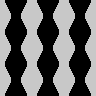
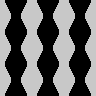
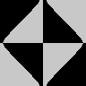
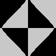
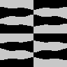
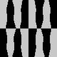
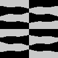
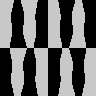

We state and solve the standard second-order linear PDE on a compact Riemannian manifold: the potential, diffusion, diffraction and wave equations.
Let \(M\) be a compact Riemannian manifold (with or without boundary), and let \(\Delta\) be its Laplace-Beltrami operator, defined as \(\Delta=*d*d\), where \(d\) is the exterior derivative (which is independent of the metric) and \(*\) is the Hodge duality between \(p\)-forms and \(d-p\)-forms (which is defined using the metric).
The following are standard results in differential geometry (see e.g. Warner’s book chapter 6 https://link.springer.com/content/pdf/10.1007%2F978-1-4757-1799-0_6.pdf)
There is a sequence of \(\mathcal{C}^\infty(M)\) functions \(\varphi_n\) and positive numbers \(\lambda_n\to\infty\) such that \[\Delta\varphi_n=-\lambda_n\varphi_n\]
The functions \(\varphi_n\), suitably normalized, are an orthonormal basis of \(L^2(M)\).
These results generalize Fourier series to an arbitrary smooth manifold \(M\). Any square-integrable function \(f:M\to{\mathbf{R}}\) is written uniquely as \[f(x)=\sum_nf_n\varphi_n(x)\] and the coefficients \(f_n\) are computed by \[f_n=\int_Mf\varphi_n.\] Some particular cases are the habitual Fourier and sine bases (but not the cosine basis), bessel functions for the disk, and spherical harmonics for the surface of a sphere.
| \(M\) | \(\varphi_n\) | \(-\lambda_n\) | |
|---|---|---|---|
| interval | \([0,2\pi]\) | \(\sin\left(\frac{nx}{2}\right)\) | \(n^2/4\) |
| circle | \(S^1\) | \(\sin(n\theta),\cos(n\theta)\) | \(n^2\) |
| square | \([0,2\pi]^2\) | \(\sin\left(\frac{nx}{2}\right)\sin\left(\frac{m\theta}{2}\right)\) | \(\frac{n^2+m^2}{4}\) |
| torus | \((S^1)^2\) | \(\sin(nx)\sin(my),\ldots\) | \(n^2+m^2\) |
| disk | \(|r|\le1\) | \(\sin,\cos(n\theta)J_n(\rho_{m,n}r)\) | \(\rho_{m,n}\) roots of \(J_n\) |
| sphere | \(S^2\) | \(Y^m_l(\theta,\varphi)\) | \(l^2+l\) |
The eigenfunctions \(\varphi_n\) are called the vibration modes of \(M\), and the eigenvalues \(\lambda_n\) are called the (squared) fundamental frequencies of \(M\).
Several geometric properties of \(M\) can be interpreted in terms of the Laplace-Beltrami spectrum. For example, if \(M\) has \(k\) connected components, the first \(k\) eigenfuntions will be supported successively on each connected component. On a connected manifold \(M\), the first vibration mode can be taken to be positive \(\varphi_1\ge0\), thus all the other modes have non-constant signs (because they are orthogonal to \(\varphi_1\)). In particular, the sign of \(\varphi_2\) cuts \(M\) in two parts in an optimal way, it is the Cheeger cut of \(M\), maximizing the perimeter/area ratio of the cut.
The zeros of \(\varphi_n\) are called the nodal curves (or nodal sets) of \(M\), or also the Chladni patterns. If \(M\) is a subdomain of the plane, these patterns can be found by cutting an object in the shape of \(M\), pouring a layer of sand over it, and letting it vibrate by high-volume sound waves at different frequencies. For most frequencies, the sand will not form any particular pattern, but when the frequency coincides with a \(\sqrt{\lambda_n}\), the sand will accumulate over the set \([\varphi_n=0]\), which is the set of points of the surface that do not move when the surface vibrates at this frequency. In the typical case, the number of connected components of \([\varphi_n>0]\) grows linearly with \(n\), thus the functions \(\varphi_n\) become more oscillating (less regular) as \(n\) grows.
Generally, symmetries of \(M\) arise as multiplicities of eigenvalues. The Laplace-Beltrami spectrum \({\lambda_1,\lambda_2,\lambda_3,\ldots}\) is closely related, but not identical, to the geodesic length spectrum, that measures the sequence of lengths of all closed geodesics of \(M\). The grand old man of this theory is Yves Colin de Verdière, student of Marcel Berger.
Geometry is not in general a spectral invariant, but non-isometric manifolds with the same spectrum are difficult to come by. The first pair of distinct but isospectral manifolds was wound in 1964 by John Milnor, in dimension 16. The first example in dimension 2 was found in 1992 by Gordon, Webb and Wolperd, and it answered negatively the famous question of Marc Kac “Can you hear the shape of a drum?’. In 2018, we have many ways to construct discrete and continuous families of isospectral manifolds in dimensions two and above.
The classical linear second order equations (potential, heat, wave and Schrödinger) are all defined in terms of the Laplacian operator in space. Thus, they can be defined readily on an arbitrary Riemannian manifold \(M\). If \(M\) is compact, the solution can be found explicitly in terms of the Laplace-Beltrami eigenfunctions. Henceforth we will call the expression of a function \(f:M\to{\mathbf{R}}\) as \(f=\sum_nf_n\varphi_n\) the Fourier series of \(f\), the numbers \(f_n\) the Fourier coefficients of \(f\) and so on.
The simplest case is Poisson equation \[\Delta u = f\] The solution is found by expressing \(u\) and \(f\) as Fourier series and identifying the coefficients: \[u(x) = \sum_n\frac{-f_n}{\lambda_n}\varphi_n(x)\] Notice that since \(\lambda_n\to\infty\), the Fourier coefficients of \(u\) tend to zero faster than those of \(f\), thus \(u\) is more regular than \(f\) (this is obvious from the equation, since \(\Delta u\) is less regular than \(u\)).
Another simple case is the screened Poisson equation \[\Delta u = \alpha u + f\] and the solution is found by the same technique: \[u(x) = \sum_n\frac{-f_n}{\alpha+\lambda_n}\varphi_n(x)\] This is like the regular Poisson equation, but the regularity is enhanced by \(\alpha\).
The next case is the heat equation, also called diffusion or smoothing equation: \[\begin{cases} u_t = \Delta u & (x,t)\in M\times[0,T] \\ u(x,0)=g(x) & x\in M\\ \end{cases}\] This equation requires an initial condition \(g\). The solution is found by separation of variables, which leads to a trivial ODE, resulting in \[u(x,t)=\sum_ng_ne^{-{\lambda_n}t}\varphi_n(x)\] It is immediate to check that this expression is a solution of the heat equation with initial condition \(g\). Several properties of the solution are visible from this form, most notably that \(u(x,\infty)=u_1\) if \(\lambda_1=0\), or \(1\) otherwise. A pure vibration mode \(\varphi_n\) decays exponentially to zero, and the speed of the exponential decay is \(\lambda_n\).
By combining the heat and Poisson equations, we get the heat equation with source: \[\begin{cases} u_t = \Delta u + f & (x,t)\in M\times[0,T] \\ u(x,0)=g(x) & x\in M\\ \end{cases}\] whose solution is \[u(x,t)=\sum_n\left( \frac{f_n}{\lambda_n}+g_ne^{-{\lambda_n}t} \right)\varphi_n(x)\]
The solution of the reverse heat equation \[\begin{cases} u_t = -\Delta u & (x,t)\in M\times[0,T] \\ u(x,0)=g(x) & x\in M\\ \end{cases}\] is formally similar \[u(x,t)=\sum_ng_ne^{{\lambda_n}t}\varphi_n(x)\] but notice that it blows up, often in a finite time.
Both direct and reverse heat equations are of the form \(u_t=c\Delta u\), whose solution is \(u(x,t)=\sum_n g_n e^{-c\lambda_n t}\varphi_n(x)\). The constant \(c\) is the speed of transmission of heat. An intermediate behaviour between \(c>0\) and \(c<0\) happens when \(c=i\).
The linear Schrödinger equation, also called diffraction equation \[\begin{cases} w_t = i\Delta w & (x,t)\in M\times[0,T] \\ w(x,0)=g(x) & x\in M\\ \end{cases}\] describes the evolution of a complex-valued function \(w\). It can be interpreted as a system of two coupled real equations by writing \(w=u+iv\) (here, assuming a real-valued initial condition \(g\)): \[\begin{cases} u_t = -\Delta v & (x,t)\in M\times[0,T] \\ v_t = \Delta u & (x,t)\in M\times[0,T] \\ u(x,0)=g(x) & x\in M\\ v(x,0)=0 & x\in M\\ \end{cases}\] The solution is then \[w(x,t)=\sum_n g_n e^{-i\lambda_n t}\varphi_n(x)\] or, in terms of \(u\) and \(v\): \[\begin{cases} u(x,t) = \sum_n g_n\cos\left(\lambda_nt\right)\varphi_n(x) \\ v(x,t) = \sum_n-g_n\sin\left(\lambda_nt\right)\varphi_n(x) \\ \end{cases}\] thus, a pure vibration mode \(\varphi_n\) oscillates periodically, at a frequency \(\lambda_n\). In terms of \(|w|\), this phenomenon is called diffraction.
The wave equation is \[\begin{cases} u_{tt} = \Delta u & (x,t)\in M\times[0,T] \\ u(x,0) = g(x) & x\in M \\ u_t(x,0) = h(x) & x\in M \\ \end{cases}\] notice that it requires an initial condition and an initial speed. By linearity, we can deal with these separately, and then sum the results. The solution is then \[u(x,t)=\sum_n\left( g_n\cos\left(\sqrt{\lambda_n} t\right) + \frac{h_n}{\sqrt{\lambda_n}}\sin\left(\sqrt{\lambda_n} t\right) \right)\varphi_n(x)\] Thus, a pure vibration mode \(\varphi_n\) oscillates with frequency \(\sqrt{\lambda_n}\).
Finally the wave equation with a force is the most complex case we treat here: \[\begin{cases} u_{tt} = \Delta u +f& (x,t)\in M\times[0,T] \\ u(x,0) = g(x) & x\in M \\ u_t(x,0) = h(x) & x\in M \\ \end{cases}\] The solution \[u(x,t)=\sum_n\left( \frac{f_n}{\lambda_n} + g_n\cos\left(\sqrt{\lambda_n} t\right) + \frac{h_n}{\sqrt{\lambda_n}}\sin\left(\sqrt{\lambda_n} t\right) \right)\varphi_n(x)\] is found by the same methods as above.
Except in emblematic cases (rectangle, torus, sphere) the eigenfunctions of an arbitrary manifold \(M\) do not have a closed-form expression.
For practical computations, we are thus restricted to numerical methods in the discrete case. The most convenient form for this discretization is to representd \(M\) as a graph with weights in their edges. In this context, we have the following objects
The weighted graph \(G=(V,E)\) where \(V\) is a set of \(n\) vertices.
The Laplacian matrix \(L\) of this graph, which is of size \(n\times n\)
The space \({\mathbf{R}}^n\) is identified with functions \(V\to{\mathbf{R}}\). Thus \({\mathbf{R}}^n\) is the discrete version of \(\mathcal{C}^\infty(M)\).
typically \(L\) will be a matrix of rank \(n-1\) with a constant eigenvector of eigenvalue 0.
We can find the eigensystem of \(L\) by calling eigs(L) in octave, and transfer the solutions obtained above using the obtained eigenvectors and eigenvalues. However, in most cases the solution is more easily obtained by solving a linear problem.
To fix the ideas we start with a concrete example: a square domain with flat metric. The following is a complete program that computes the chladni figures of a square domain.
w = 128; # width and height of the domain
p = sparse(1:w-1, 2:w, 1, w, w); # path graph of length p
A = kron(p, speye(w)) + kron(speye(w), p); # kronecker sum
L = A+A' - diag(sum(A+A')); # graph laplacian
[f,l] = eigs(L, 64, "sm"); # eigs of smallest magnitudeAfter running this code, the ith eigenfunction is f(:,i) and the eigenvalues are on diag(l).


 
 


And now, with Dirichlet boundary conditions (slightly different code)
w = 128; # width and height of the domain
p = sparse(1:w-1, 2:w, 1, w, w) - speye(w); # path graph of length p
A = kron(p, speye(w)) + kron(speye(w), p); # kronecker sum
L = A + A'; # graph laplacian
[f,l] = eigs(L, 64, "sm"); # eigs of smallest magnitude 


 
 


  
  


For completenes, this is the octave code that saves the figures above
for i=1:64
n = sprintf("o/chladni_%03d.png", i);
x = reshape(200*double(0<f(:,i)),w,w);
iio_write(n, x);
endfor